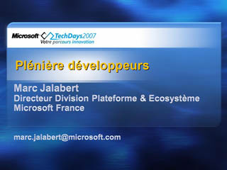
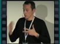

Plénière Développeurs

Speaker(s): Marc Jalabert
Sécurité Numérique et Tendances d'Innovation

 Speaker(s): Alfonso Castro
Speaker(s): Alfonso Castro
Un Monde d'Innovations à Votre Service
 Speaker(s): Laurent Delaporte
Speaker(s): Laurent Delaporte
Déployer l'Isolation par IPsec
 Speaker(s): Christian-Pierre Belin
Speaker(s): Christian-Pierre Belin
Outils et Ressources à Votre Disposition Autour de la Sécurité

 Speaker(s): Mathieu Malaise
Speaker(s): Mathieu Malaise
Quand les Technologies Microsoft se Mettent au Service de la Maison
 Speaker(s): Guillaume Pelletier
Speaker(s): Guillaume Pelletier
Les Nouveautés d'Office Access 2007

 Speaker(s): Maxence Hubiche
Speaker(s): Maxence Hubiche
Nouveautés Wi-Fi avec Windows Vista
 Speaker(s): Pascal Saulière
Speaker(s): Pascal Saulière
Format de Documents et Interopérabilité

Speaker(s): Marc Gardette
Antigen ou Forefront ?
 Speaker(s): Gordana Cindric
Speaker(s): Gordana Cindric
PowerShell: Nouvel Outil de Script sous Windows
 Speaker(s): Mouloud Amazit, Antoine Habert
Speaker(s): Mouloud Amazit, Antoine Habert
Retour d'Expérience de l'Informatique Interne Microsoft (Exchange, ADFS, Cartes à Puce,...)

 Speaker(s): Cyril Carbonati
Speaker(s): Cyril Carbonati
Nouveautés d'Internet Explorer 7.0

 Speaker(s): Bernard Ourghanlian
Speaker(s): Bernard Ourghanlian
Vue d'Ensemble de l'Offre System Center
 Speaker(s): Thiebault Riegel, Geneviève Koehler
Speaker(s): Thiebault Riegel, Geneviève Koehler
Déploiement d'Applications Virtualisées (Softricity)

 Speaker(s): Jérôme Boulon
Speaker(s): Jérôme Boulon
Vue d'Ensemble de System Center Configuration Manager 2007
 Speaker(s): Fabrice Meillon, Hervé Thibault
Speaker(s): Fabrice Meillon, Hervé Thibault
Découvrir le Futur de Live Communications Server: Microsoft Office Communications Server 2007

 Speaker(s): Gwénaël Fourré
Speaker(s): Gwénaël Fourré